Powered by CodePro Analytix and Eclipse
Summary |
Total Violations |
The following graphs shows the total number of violations found each time the code was audited. They also show the relative number of violations of each severity level.
|
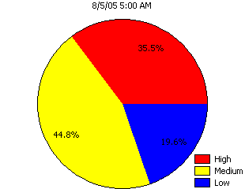 Total Violations |
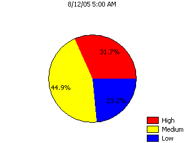 Total Violations | |
|
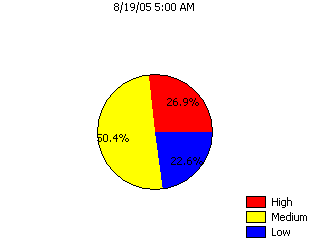 Total Violations |
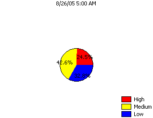 Total Violations |
Violations by Audit Rule Group |
The following graph shows the total number of violations found in each of the audit rule groups that were used to analyze the code.
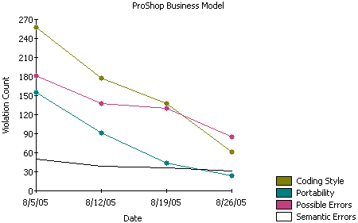
Violations by Audit Rule Group
Violations by Project |
The following graph shows the total number of violations found in each of the projects that were audited.
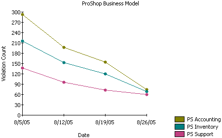
Violations by Project
Violations by Author |
The following graphs show the total number of violations found in each of the audit rule groups that were used to analyze the code at each of the times an audit was performed. They also show the relative number of violations of each severity level.
|
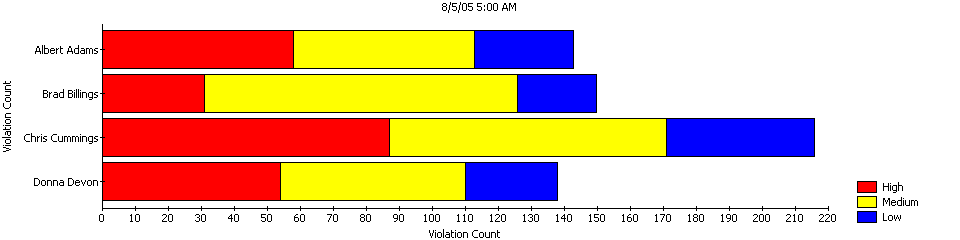 Violations by Author |
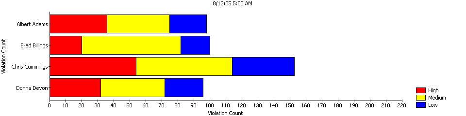 Violations by Author | |
|
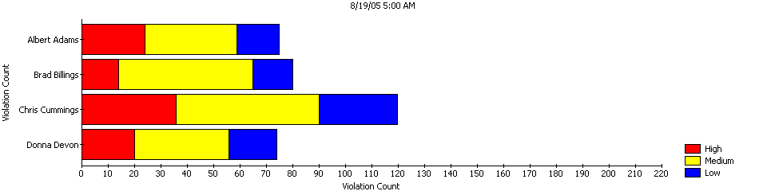 Violations by Author |
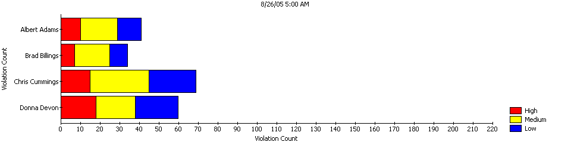 Violations by Author |
Total Fixed Violations |
The following graph shows the number of violations that were fixed between each audit time and the previous audit time. It also shows the number of violations fixed at each severity level.
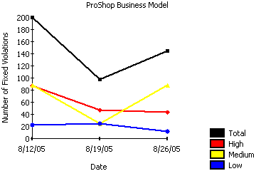
Total Fixed Violations
Fixed Violations by Author |
The following graph shows the number of violations that were fixed between each audit time and the previous audit time, grouped by author.
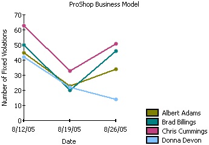
Fixed Violations by Author